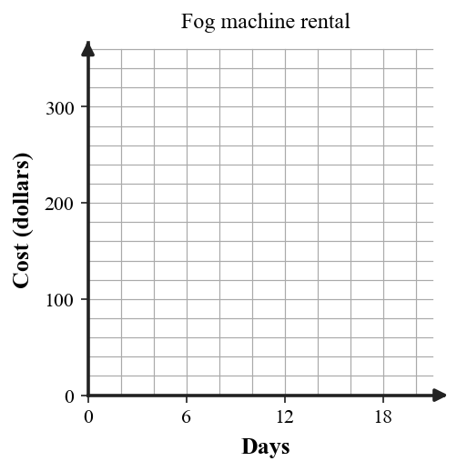
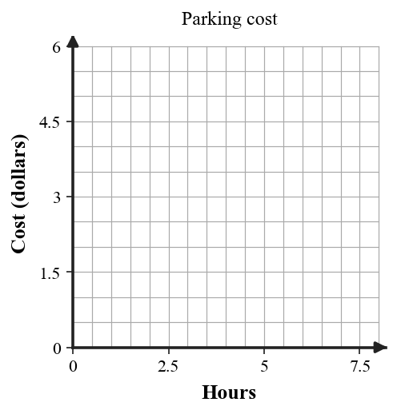
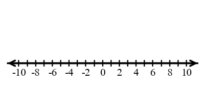
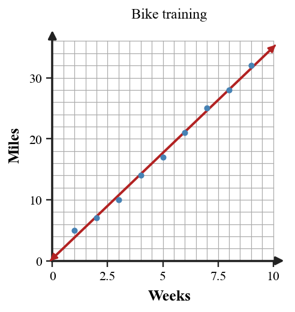
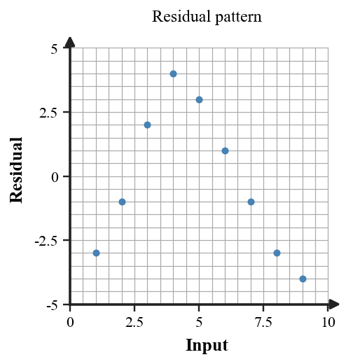
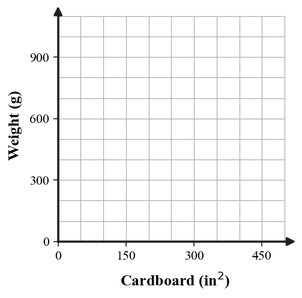
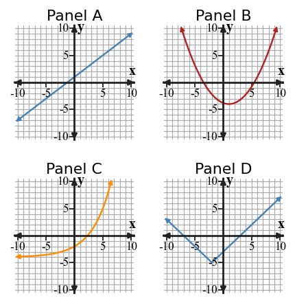
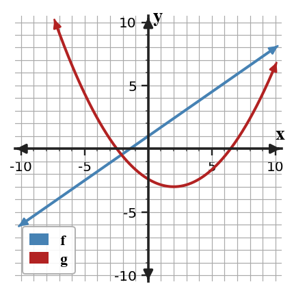
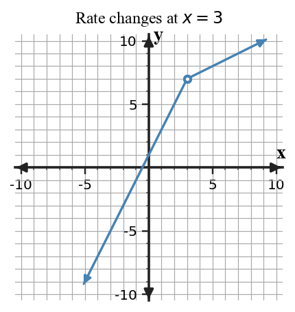

8-S1-DOK1.01
For the table, state whether the pattern is most likely linear, quadratic, or exponential, and name the clue you used.
| $x$ | $0$ | $1$ | $2$ | $3$ | $4$ |
|---|---|---|---|---|---|
| $y$ | $4$ | $7$ | $10$ | $13$ | $16$ |
Structured bank aligned to the Unit 8 assessment plan. Items are grouped by section and DOK level for warm-ups, practice rotation, formative checks, and assessment drafting.
Learning Target: Students will determine whether a situation is best modeled by a linear, quadratic, or exponential function.
For the table, state whether the pattern is most likely linear, quadratic, or exponential, and name the clue you used.
| $x$ | $0$ | $1$ | $2$ | $3$ | $4$ |
|---|---|---|---|---|---|
| $y$ | $4$ | $7$ | $10$ | $13$ | $16$ |
For the table, state the likely function family and the pattern clue.
| $x$ | $0$ | $1$ | $2$ | $3$ | $4$ |
|---|---|---|---|---|---|
| $y$ | $1$ | $4$ | $9$ | $16$ | $25$ |
For the table, state the likely function family and the pattern clue.
| $x$ | $0$ | $1$ | $2$ | $3$ | $4$ |
|---|---|---|---|---|---|
| $y$ | $3$ | $6$ | $12$ | $24$ | $48$ |
A function has constant second differences in an equally spaced table. Name the function family that matches this clue and one graph feature you would expect.
A context says a starting value increases by $18$ each week. Name the likely model family and the role of $18$.
A context says a population is multiplied by $1.07$ each year. Name the likely model family and interpret $1.07$.
A height model rises, reaches one maximum, and then falls. Name the likely function family and the graph feature that supports your choice.
Use the four graphs. For each panel, name one feature that could help distinguish its family without using only its shape.

Write the first five terms of the sequence with $t(1)=8$ and $t(n+1)=t(n)-5$. Then state whether the sequence is arithmetic or geometric.
Write the first five terms of the sequence with $a_1=3$ and $a_{n+1}=-2a_n$. Then state whether the sequence uses repeated addition or repeated multiplication.
For $a_n=2n-5$, list the first five terms and identify the constant change.
A table has first differences $5,9,13,17$. Are the second differences constant? State the likely function family.
A model has equation $y=6(0.8)^x$. Identify the initial value and the growth or decay factor.
A model has equation $y=-2x^2+8x+3$. Identify the family and whether its graph opens up or down.
Choose a linear, quadratic, or exponential model for the data and write one sentence of evidence.
| $x$ | $0$ | $1$ | $2$ | $3$ | $4$ |
|---|---|---|---|---|---|
| $y$ | $5$ | $8$ | $17$ | $32$ | $53$ |
The first two terms of a sequence are $2$ and $6$. Write the next four terms if the sequence is arithmetic, then write the next four terms if it is geometric. Explain how the models differ.
The leadership class collects shoes. Each box holds $20$ pairs. Use the blank axes to make a step graph showing boxes needed for $0$ to $200$ pairs of shoes.

A fog machine costs \$60 for delivery plus \$38 for each block of up to $3$ rental days. Use the blank axes to graph the cost for $0$ to $21$ days.

For the table, decide whether the better model is linear or exponential. Then write a possible equation using $x=0$ as the starting input.
| $x$ | $0$ | $1$ | $2$ | $3$ |
|---|---|---|---|---|
| $y$ | $4$ | $10$ | $25$ | $62.5$ |
A ball is thrown upward from $4$ feet with initial velocity $32$ feet per second. Explain why a quadratic model is more reasonable than a linear model for height over time.
Use the two graphs. Which model has a constant rate of change and which has a changing rate? Support your answer with one graph feature from each panel.

The table gives savings after each month. Find the monthly change, write a linear model, and predict the savings after $12$ months.
| Month | $0$ | $1$ | $2$ | $3$ |
|---|---|---|---|---|
| Savings | $120$ | $155$ | $190$ | $225$ |
A bacteria culture begins with $250$ cells and doubles every $3$ hours. Write an exponential model for the number of cells after $n$ three-hour periods and find the amount after $5$ periods.
Best Price Parking charges \$2 for the first hour and \$0.50 for each additional hour. Use the blank axes to create a step graph for $0$ through $8$ hours.

A student says the table is exponential because the outputs grow faster each time. Critique the claim. Use first differences, second differences, or ratios to support the correct model choice.
| $x$ | $0$ | $1$ | $2$ | $3$ | $4$ |
|---|---|---|---|---|---|
| $y$ | $2$ | $5$ | $10$ | $17$ | $26$ |
The equation $y=4x+3$ and the table are supposed to match. Find the first mismatch, explain how you know, and revise the incorrect value.
| $x$ | $0$ | $1$ | $2$ | $3$ |
|---|---|---|---|---|
| $y$ | $3$ | $7$ | $10$ | $15$ |
Two students model the same data. Student A uses $y=7x+10$. Student B uses $y=10(1.7)^x$. Use two different pieces of evidence from the table to decide which model is more reasonable for the given domain.
| $x$ | $0$ | $1$ | $2$ | $3$ |
|---|---|---|---|---|
| $y$ | $10$ | $17$ | $29$ | $49$ |
A cereal company wants to predict weight from package cardboard. The scatterplot suggests an increasing curved relationship. Argue whether a linear model is reasonable for short-term interpolation, long-term extrapolation, both, or neither.

A garden club records plant height for five weeks: $12,18,27,41,62$ cm. Design a short modeling response that chooses a function family, states an assumption, and predicts week $6$.
A store manager first chose a linear model for online orders. New data show the orders multiplied by about $1.4$ each week for four weeks. Revise the model choice and explain what evidence changed the decision.
Create a real-world situation that would be better modeled by a quadratic function than by a linear or exponential function. Include a small table of at least four points and explain the decisive clue.
Use the comparison graphs to synthesize a model-selection checklist with three evidence tests. Each test must connect a representation to a function-family conclusion.
Learning Target: Students will analyze transformations across multiple function families.
Describe the transformation from $f(x)=x^2$ to $g(x)=(x-4)^2$.
Describe the transformation from $f(x)=|x|$ to $g(x)=|x|+6$.
Describe the transformation from $f(x)=2^x$ to $g(x)=3\cdot 2^x$.
For $g(x)=-(x+2)^2$, identify the horizontal shift and the reflection.
If $f(x)=|x|$ has vertex $(0,0)$, what is the vertex of $g(x)=|x-5|-3$?
If $f(x)=2^x$ has $y$-intercept $1$, what is the $y$-intercept of $g(x)=4\cdot 2^x$?
Use the before-and-after graphs. Name the transformation shown and one key point that moved.

Complete the sentence: In $g(x)=f(x)-7$, every output of $f$ is changed by ______.
Complete the sentence: In $g(x)=f(x+3)$, every input acts as if it is ______ units from the original input.
For $g(x)=\frac{1}{2}|x|$, identify whether the graph is wider or narrower than $f(x)=|x|$.
For $g(x)=3(x-1)^2+2$, identify the vertex.
For $g(x)=2^{x-4}+1$, identify the horizontal shift and vertical shift.
Which parameter controls the vertical stretch in $g(x)=a|x-h|+k$?
Which parameter controls the vertex location in $g(x)=a(x-h)^2+k$?
Write an equation for the transformation of $f(x)=x^2$ that shifts right $3$ units and down $5$ units.
Write an equation for the transformation of $f(x)=|x|$ that reflects over the $x$-axis and shifts up $4$ units.
The point $(2,5)$ lies on $f(x)$. Where does the point move under $g(x)=f(x-6)+1$?
The point $(-1,4)$ lies on $f(x)$. Where does the point move under $g(x)=2f(x)+3$?
Graph $g(x)=(x+2)^2-3$ on the blank coordinate plane. Label the vertex and two symmetric points.

Graph $g(x)=|x-3|+2$ on the blank coordinate plane. Label the vertex and the slope on each side.
Use the graph of the transformed quadratic. Write a possible equation in vertex form and identify the parent function.

Use the graph of the transformed absolute value function. Write a possible equation and explain the role of the vertex.

A population model $P(t)=500(1.08)^t$ is changed to $Q(t)=500(1.08)^{t-4}$. Explain what the $t-4$ does to the graph and to the timing of the model.
Write a transformed exponential function with initial value $6$ and horizontal asymptote $y=2$ using parent $f(x)=2^x$.
A student claims $g(x)=(x-3)^2+2$ shifts $f(x)=x^2$ left $3$ and up $2$. Critique the claim using the equation and the vertex.
Decide whether the transformation can be written both as a shift of the parent and as a movement of key points. Build a strategy for checking your answer using $f(x)=|x|$ and $g(x)=|x+4|-1$.
Compare the two graphs. Which key features are preserved, and which are changed by the transformation? Use at least two representations in your explanation.
A student says $g(x)=2f(x-1)$ shifts every point on $f$ right $1$ and up $2$. Critique the statement and revise it so it is precise for any function family.
Recommend whether a shifted quadratic or shifted absolute value model is better for a path with a single minimum at $(4,2)$ and equal slopes on both sides. Justify using key features and context.
Synthesize the four transformation graphs into a one-page rule card. In order, the panels show $y=(x+2)^2-3$, $y=-|x-2|+4$, $y=2(1.25)^{x+1}-5$, and $y=-0.5x+3$. For each family, state how $a$, $h$, and $k$ affect at least one key feature.

Design a transformed function that has vertex $(3,-2)$, opens upward, and passes through $(5,6)$. State the family, equation, and how you used the constraint.
Revise the flawed model $h(x)=|x|+5$ for a taxi distance from a target address when the minimum distance occurs $3$ blocks east of the start and is $1$ block. Explain the new parameters.
Learning Target: Students will analyze and model situations involving absolute value functions.
Mr. Guo is thinking of a number. When he takes the absolute value of his number, he gets $15$. List all possible numbers and explain why there are two.
Evaluate $|x+1|$ when $x=-3$. State which operation happens first inside the absolute value.
Solve $|x-3|=5$ and check both answers in the original equation.
Solve $5|x|=35$ and state why there are two possible values.
Solve $|x+3|=-2$. Explain why your answer makes sense.
For $y=|x-4|+2$, identify the vertex and the minimum output.
For $y=-|x+1|+6$, identify the vertex and whether it is a maximum or minimum.
For $y=2|x-5|$, explain what value of $x$ makes $y=0$.
State the interval where $y=|x-2|$ is decreasing and the interval where it is increasing.
Use the number line to mark all solutions to $|x-2|\le 3$.

Use the graph to identify the vertex and the $x$-intercepts of the absolute value function.

A piecewise rule changes formula at $x=4$. Name the value $4$ in the context of intervals.
For a piecewise model, explain the difference between an open circle and a closed circle at an endpoint.
A distance-from-target model has target $80$. Write the expression that represents distance from the target.
Solve $|9+3x|=39$ by writing and solving two linear equations.
Solve $|2x+1|=10$ and check both possible answers.
Write an absolute value equation with solutions $x=-4$ and $x=8$.
A runner is $6$ miles from a checkpoint at noon and moves toward it at $2$ miles per hour, then away after passing it. Write an absolute value model for distance from the checkpoint after $t$ hours.
Graph $y=|x+2|-4$ on the blank coordinate plane and label the vertex and intercepts.
Use the graph. Write the absolute value equation shown and state the domain and range.

Evaluate the piecewise rule at $x=-2$, $x=0$, and $x=5$: $f(x)=2x+1$ for $x\lt 0$ and $f(x)=x^2$ for $x\ge 0$.
Write a piecewise rule for a parking garage that charges \$5 for the first hour and \$3 per hour after the first hour, for whole hours from $1$ to $6$.
Use the graph to estimate $f(-4)$, $f(0)$, and $f(5)$. Then describe the interval where the model changes rule.

For $y=3|x-1|-6$, find the vertex, the minimum output, and the two $x$-intercepts.
The equation $y=|x-2|+1$ and the table are supposed to match. Find the first mismatch, justify it, and revise the table.
| $x$ | $0$ | $1$ | $2$ | $3$ |
|---|---|---|---|---|
| $y$ | $3$ | $2$ | $0$ | $2$ |
Two students solve $|3x-6|=12$. One splits into $3x-6=12$ or $3x-6=-12$; the other divides by $3$ first and solves $|x-2|=4$. Compare the methods and explain why they should give the same solutions.
A hiker distance model is $d(t)=|2t-8|$ for $0\le t\le 8$. Analyze whether the domain and vertex make sense if $t$ is hours after sunrise and $d$ is miles from camp.
Create a strategy for deciding whether a two-part context should be modeled with an absolute value function or a general piecewise function. Your strategy must include a test for symmetry and a test for rate.
Create an absolute value model for a delivery driver whose distance from a warehouse decreases to $0$ after $4$ hours and then increases at the same rate. Include equation, domain, and interpretation of the vertex.
Design a two-interval piecewise model for a gym membership that has one sign-up fee and then a different monthly rate after month $6$. Include a rule and explain the interval restrictions.
Synthesize the graph and a context: write a story that could match the piecewise graph, then identify where the rule changes and what each interval means.
Revise this flawed model: a student used $d(t)=|t-5|$ for a cyclist who rides toward home at $3$ miles per hour and then away at $1$ mile per hour. Explain why symmetry fails and write a better piecewise rule.
Learning Target: Students will create and analyze mathematical models using real-world data.
In a data table comparing study time and quiz score, identify the independent variable and dependent variable.
A scatterplot rises from left to right but levels off. Name one reason a linear model might overpredict for large inputs.
Define interpolation in a modeling situation.
Define extrapolation in a modeling situation.
A residual is positive. State whether the model overpredicted or underpredicted the actual value.
A residual is negative. State whether the model overpredicted or underpredicted the actual value.
For a model of height over time for a thrown ball, identify a reasonable domain restriction.
For a model of money in a savings account, explain why negative time is usually outside the domain.
A table has ratios that are close but not exact. State why a model can still be useful even if the data are not perfect.
Name one feature that would suggest a quadratic model for real-world data.
Name one feature that would suggest an exponential model for real-world data.
Use the scatterplot. Describe the association as positive, negative, or no clear association, and state whether it appears linear.

Use the residual plot. State whether the residuals look randomly scattered or patterned.

In a model $W=0.06r^2$, where $r$ is radius in centimeters and $W$ is weight in grams, interpret the output $W$.
The table gives cardboard area and cereal weight. Make a scatterplot on the given axes and describe the association.
| Cardboard area | $34$ | $150$ | $218$ | $325$ | $357$ | $471$ |
|---|---|---|---|---|---|---|
| Weight | $21$ | $198$ | $283$ | $567$ | $680$ | $1020$ |

Use the data to decide whether weight is better modeled as roughly proportional to radius or to radius squared. Explain your choice with a pattern from the table.
| Radius | $2$ | $4$ | $6$ | $8$ |
|---|---|---|---|---|
| Weight | $0.2$ | $0.8$ | $1.8$ | $3.2$ |
A linear model for test score is $S=12h+50$, where $h$ is study hours. Predict the score for $h=3.5$ and state whether $h=20$ is a reasonable input for one week.
An exponential model for app users is $U=1200(1.15)^w$. Predict users after $4$ weeks and interpret $1.15$.
Use $h(t)=-16t^2+48t+5$ to predict the height at $t=2$ seconds. Then state one domain limit for the model.
Use the scatterplot and line of best fit to estimate the output when $x=7$. Then say whether the prediction is interpolation or extrapolation.
The model $C=45+12m$ gives cost after $m$ months. Find the cost after $9$ months and interpret the $45$ in context.
For data with outputs $5,8,14,26,50$, decide whether a linear or exponential model is more reasonable and support your answer with differences or ratios.
Use the disk data scatterplot. Estimate the weight of a $7$ cm disk and explain why your estimate should be inside the data domain.

A quadratic regression predicts attendance $A=-0.08(t-85)^2+26$ thousand at temperature $t$. Predict attendance at $95$ and interpret the vertex.
A model gives $P=50+6d$ for plant height after $d$ days. The data begin to level off after day $10$. Analyze why the model may fit early data but fail later.
Compare the table and scatterplot. Which representation better reveals whether the association is curved? Justify your answer with evidence from both.
| Radius | $1.3$ | $2.4$ | $3.7$ | $5.3$ | $7.7$ | $9.6$ |
|---|---|---|---|---|---|---|
| Weight | $0.1$ | $0.3$ | $0.8$ | $1.6$ | $3.4$ | $5.4$ |
A student fits a linear model to data whose residuals are negative, then positive, then negative as $x$ increases. Critique the model choice and name a model family that might be better.
The equation $y=2x+4$ and the data table are supposed to match. Find the first mismatch, explain the error, and revise the data point.
| $x$ | $0$ | $1$ | $2$ | $3$ |
|---|---|---|---|---|
| $y$ | $4$ | $6$ | $9$ | $10$ |
Use the attendance scatterplot to synthesize a short modeling response: choose a likely family, state one assumption, and predict whether attendance will keep rising above $95$ F.

A coach has two models for sprint time after practice days: linear improvement or exponential leveling. Revise the initial linear model when new data show smaller and smaller improvements. Include a new model type and a domain limit.
Recommend which of two approaches is better for predicting a value inside the data range: hand-drawn trend line or exact equation from two endpoints. Justify using scatter, residual, and context evidence.
Create a small data set with six points that would make a linear model look reasonable for interpolation but risky for extrapolation. Explain the hidden context limit.
Learning Target: Students will synthesize understanding of function families and representations to solve complex problems.
Match each feature to a family: constant rate of change, constant second difference, constant ratio, vertex minimum.
For $y=3x-7$, identify the family, slope, and $y$-intercept.
For $y=(x+1)^2-9$, identify the family and vertex.
For $y=5(0.6)^x$, identify the family and whether it represents growth or decay.
For $y=|x-8|+2$, identify the family and vertex.
For a piecewise function, explain why each formula needs an interval.
State one advantage of a table when comparing function families.
State one advantage of a graph when comparing function families.
State one advantage of an equation when comparing function families.
For the sequence $4,9,14,19$, identify the family and write the next term.
For the sequence $3,6,12,24$, identify the family and write the next term.
For the sequence $2,5,10,17$, identify the family and write the next term.
Use the family comparison figure. Name one feature from each graph that would help you select a model in a context.

A square has area $225$ square centimeters. Determine the side length and describe how a diagram could support your reasoning.
Given $f(x)=2x+1$ and $g(x)=x^2-4$, find the input values where the two functions have the same output.
Use the graph of the two functions to estimate their intersection and explain what the intersection means as equal outputs.

A table, equation, and context all describe the same linear model. Fill in the missing equation if the context starts at $12$ and adds $7$ each step.
| $x$ | $0$ | $1$ | $2$ | $3$ |
|---|---|---|---|---|
| $y$ | $12$ | $19$ | $26$ | $33$ |
A quadratic has vertex $(2,-3)$ and passes through $(4,5)$. Write a possible equation in vertex form.
An exponential model has outputs $9,12,16,\frac{64}{3}$ for $x=0,1,2,3$. Find the multiplier and write a possible equation.
For $f(x)=|x-3|+2$, find $f(-1)$, $f(3)$, and $f(8)$, then explain which output is the minimum.
Write a piecewise rule for a function that is $2x+1$ on $x\lt 0$ and $x^2+1$ on $x\ge 0$. Then evaluate it at $x=-3$ and $x=3$.
Compare $L(x)=4x+20$ and $E(x)=20(1.2)^x$ at $x=0,1,2,3$. Which grows faster by $x=3$?
Graph $y=|x+1|-2$ and $y=2x+1$ on the blank coordinate plane. Estimate where the functions have equal outputs.
A square area model has area $A=s^2$. If the diagonal is needed after finding side length, explain which representation helps with each step: equation, diagram, or table.
Two methods are proposed to solve $|x-2|=x+4$: graph both sides, or split the absolute value into cases. Compare the methods and identify one check each method needs.
A student predicts $20(1.1)^{12}$ people from a model built on weeks $0$ through $4$. Give a reasonableness argument for whether the prediction should be trusted.
Create a strategy for solving a mixed-representation problem when you are given a graph of one function and an equation for another. Include how to estimate and how to verify.
Analyze the structure of the equation $(x-3)^2+2=(x-3)^2-5$. Decide whether it has one solution, no solution, or infinitely many solutions, and justify without expanding.
Create a capstone task with a context, table, and equation that require a student to choose between linear and exponential models. Include the correct model choice and the evidence you expect.
Recommend whether a graph, table, or equation is the best representation for deciding when two functions have equal outputs. Use a specific pair of function families in your argument.
Synthesize the two-function graph with an equation-based check. Estimate the intersection from the graph, then describe how substitution or tables could verify the estimate.

Revise a flawed capstone solution: a student used one linear formula for a situation that changes rate at $x=3$. Use the graph to write a better piecewise plan and explain the correction.
